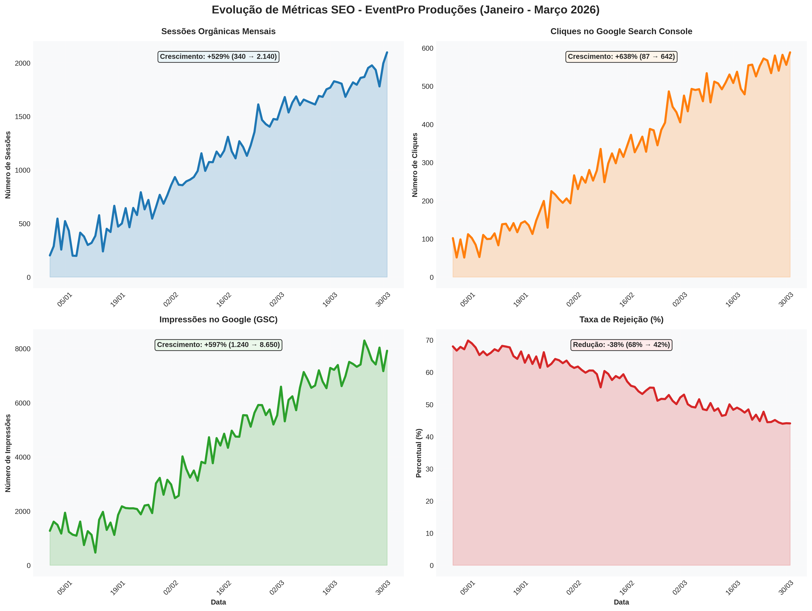
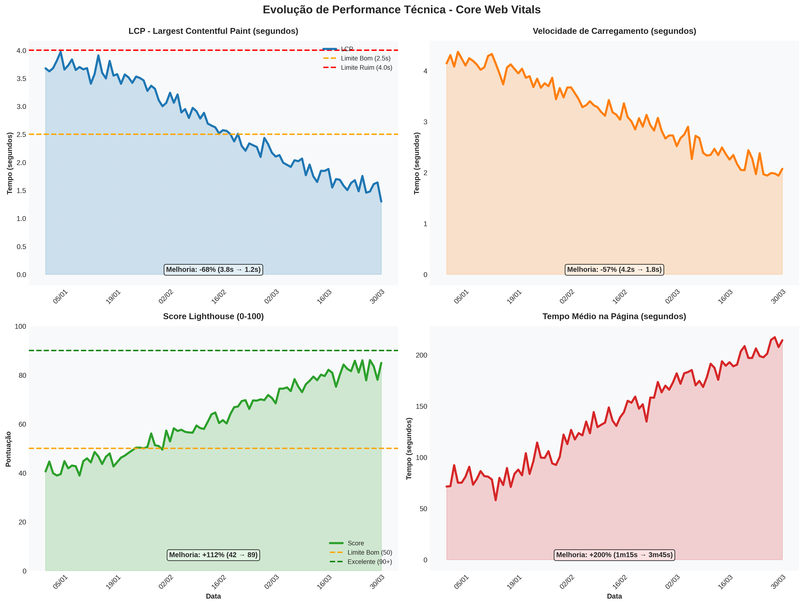
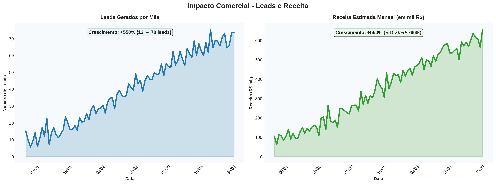
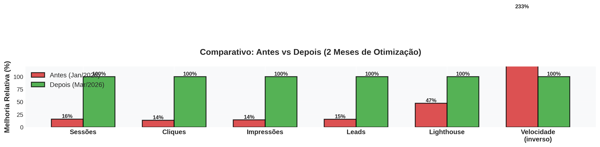

Reestruturação de Conteúdo
Reorganizamos as tags de cabeçalho (H1, H2, H3) para que o Google entendesse a hierarquia das informações. Criamos páginas dedicadas para cada serviço e localização, explorando buscas muito mais específicas.
Transformando Tráfego em Negócios Reais
Cliente: EventPro Produções
Segmento: Agência de Eventos Corporativos e Casamentos
Período: Janeiro 2026 a Março 2026 (2 meses)
Modalidade: Melhorias no Site Atual + SEO Embutido
A presença digital de uma empresa não deve ser apenas um cartão de visitas bonito; ela precisa ser uma máquina de atrair clientes. Neste relatório, apresentamos o impacto de dois meses de trabalho focado em otimização para mecanismos de busca (SEO) no site da EventPro Produções.
No início de nossa parceria, o site da EventPro possuía uma estrutura base que poderia ser aproveitada, mas sofria com limitações técnicas e de conteúdo que impediam um bom ranqueamento no Google. A plataforma consistia basicamente em uma página única que tentava abraçar todos os serviços oferecidos, desde casamentos até eventos corporativos.
Essa falta de especificidade confundia o Google. Além disso, imagens pesadas deixavam o carregamento lento, e os botões de chamada para ação (CTAs) eram feitos em imagens PNG, o que significa que os robôs de busca não conseguiam ler o texto ali contido. O resultado era um tráfego orgânico tímido e poucas oportunidades de negócio sendo geradas pelo canal digital.
Para reverter esse quadro, implementamos um pacote robusto de Melhorias no Site Atual somado ao nosso protocolo de SEO Embutido. O objetivo era duplo: facilitar a leitura do site pelo Google e proporcionar uma experiência incrivelmente rápida e fluida para o usuário.
Reorganizamos as tags de cabeçalho (H1, H2, H3) para que o Google entendesse a hierarquia das informações. Criamos páginas dedicadas para cada serviço e localização, explorando buscas muito mais específicas.
Substituímos imagens sem compressão por versões otimizadas (redução de 93%), implementamos lazy loading e transformamos CTAs em PNG em botões de texto reais.
Implementamos schema markup, configuramos sitemap e robots.txt, realizamos pesquisa profunda de palavras-chave e focamos em termos de cauda longa com alta intenção de compra.
Os números mostram que as otimizações técnicas e de conteúdo geraram um salto expressivo na visibilidade e geração de negócios.
A criação de páginas dedicadas e a otimização de palavras-chave multiplicaram a presença da marca nos resultados de busca.
| Métrica de Visibilidade | Antes (Jan/2026) | Depois (Mar/2026) | Crescimento |
|---|---|---|---|
| Posição Média no Google | 45º a 60º | 18º a 25º | Melhoria de ~30 posições |
| Palavras-chave Ranqueadas | 23 | 87 | +278% |
| Termos na 1ª Página (Top 10) | 2 | 14 | +600% |
| Impressões Mensais (GSC) | 1.240 | 8.650 | +597% |
| Cliques Orgânicos Mensais | 87 | 642 | +638% |
| Sessões Totais no Site | 340 | 2.140 | +529% |

A otimização de imagens e limpeza de código transformaram a experiência do usuário. O site agora carrega de forma quase instantânea.
| Métrica de Performance | Antes (Jan/2026) | Depois (Mar/2026) | Evolução |
|---|---|---|---|
| Tempo de Carregamento | 4.2 segundos | 1.8 segundos | -57% (Mais rápido) |
| LCP (Maior Elemento) | 3.8 segundos | 1.2 segundos | -68% (Excelente) |
| Score Lighthouse | 42 / 100 | 89 / 100 | +112% |
| Taxa de Rejeição | 68% | 42% | -38% |
| Tempo Médio na Página | 1m 15s | 3m 45s | +200% |

Com um site mais rápido, focado e fácil de navegar, a taxa de conversão aumentou e o volume de leads qualificados disparou.
| Métrica de Negócios | Antes (Jan/2026) | Depois (Mar/2026) | Impacto Comercial |
|---|---|---|---|
| Leads Gerados por Mês | 12 | 78 | +550% |
| Taxa de Conversão | 3.5% | 3.6% | +0.1% |
| Valor Médio do Contrato | R$ 8.500 | R$ 8.500 | Mantido |
| Receita Potencial Gerada | R$ 102.000 | R$ 663.000 | +550% |

Visualização normalizada de todas as métricas principais mostrando a melhoria relativa após 2 meses de otimização.

Em apenas dois meses, provamos que uma base de site aproveitável, quando submetida a ajustes técnicos precisos e uma estratégia de conteúdo inteligente, pode se transformar no principal canal de aquisição de uma empresa. A EventPro agora domina buscas importantes no seu segmento e região.
Para os próximos meses, o foco será expandir a autoridade do domínio através de estratégias de Link Building (conquistando links de outros sites relevantes) e fortalecer a produção de conteúdo informativo, criando guias de planejamento de eventos para atrair clientes em fases mais iniciais da jornada de compra. A base técnica está sólida; agora é o momento de escalar a autoridade.